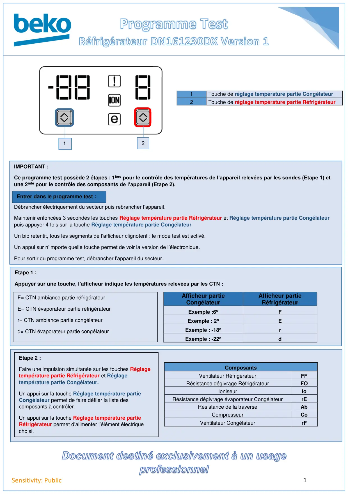

Prog Test REF DN161230DX Electronique 1

1Sensitivity: Public1Touche de réglage température partie Congélateur2Touche de réglage température partie RéfrigérateurComposantsVentilateur RéfrigérateurFFRésistance dégivrage RéfrigérateurFOIoniseurIoRésistance dégivrage évaporateur CongélateurrERésistance de la traverseAbCompresseurCoVentilateur CongélateurrFIMPORTANT :Ce programme test possède 2 étapes : 1ière pour le contrôle des températures de l’appareil relevées par les sondes (Etape 1) etune 2nde pour le contrôle des composants de l’appareil (Etape 2).Entrer dans le programme test :Débrancher électriquement du secteur puis rebrancher l’appareil.Maintenir enfoncées 3 secondes les touches Réglage température partie Réfrigérateur et Réglage température partie Congélateurpuis appuyer 4 fois sur la touche Réglage température partie CongélateurUn bip retentit, tous les segments de l’afficheur clignotent : le mode test est activé.Un appui sur n’importe quelle touche permet de voir la version de l’électronique.Pour sortir du programme test, débrancher l’appareil du secteur.Etape 1 :Appuyer sur une touche, l’afficheur indique les températures relevées par les CTN :Afficheur partieCongélateurAfficheur partieRéfrigérateurExemple :6oFExemple : 2oEExemple : -18orExemple : -22odF= CTN ambiance partie réfrigérateurE= CTN évaporateur partie réfrigérateurr= CTN ambiance partie congélateurd= CTN évaporateur partie congélateurEtape 2 :Faire une impulsion simultanée sur les touches Réglagetempérature partie Réfrigérateur et Réglagetempérature partie Congélateur.Un appui sur la touche Réglage température partieCongélateur permet de faire défiler la liste descomposants à contrôler.Un appui sur la touche Réglage température partieRéfrigérateur permet d’alimenter l’élément électriquechoisi.Entrer dans le programme test :12
1 / 1